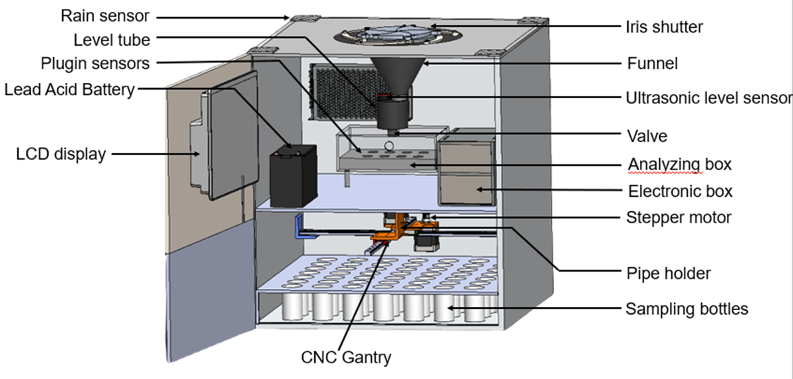
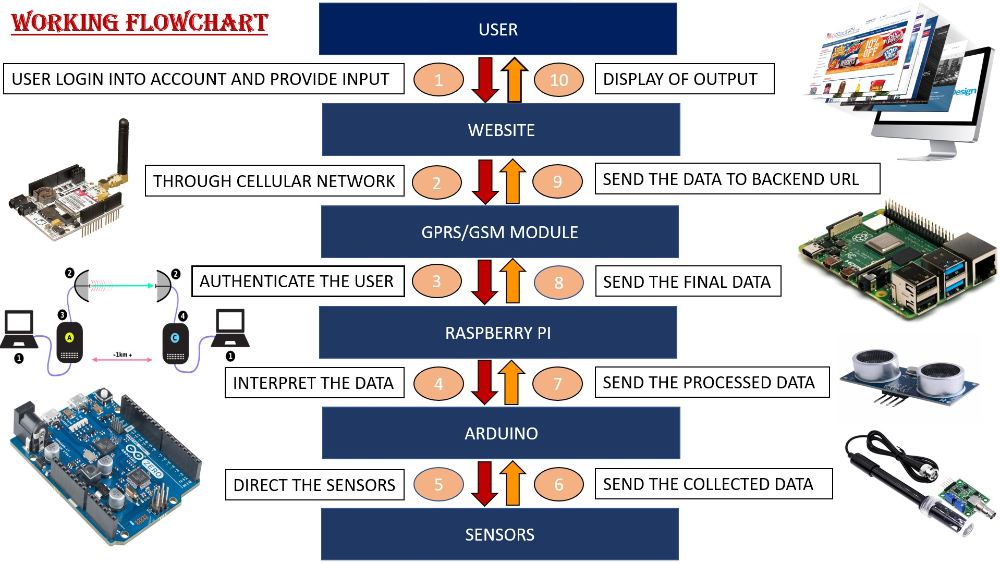

The model will be useful for meteorological stations, agricultural lands, universities, colleges,
pollution control board, mining industries, archaeological department, fisheries, amateur
scientists, public stations, and research and academic institutions to measure rainfall amount and
water quality.
The model provides a commercially available solution to sample rainwater in a controlled manner,
i.e., duration, interval, and quantity.
Click below to open a 3-D model of FARCRAWS

Working
HOW DOES IT WORK

Functions
To analyze a small-scale variability of rainfall and its composition.
To use for a non-continuous assessment of intra-event rainwater composition variability
Click below to know more about Working
Contact-Us
REACH OUR TEAM
FARCRAWS
Content Owned and Maintained by FARCRAWS Team
Designed, Developed and Hosted by FARCRAWS Team from MANIT,Bhopal
Guided by PRL,Ahmedabad and Sponsored by ISRO,Government of India